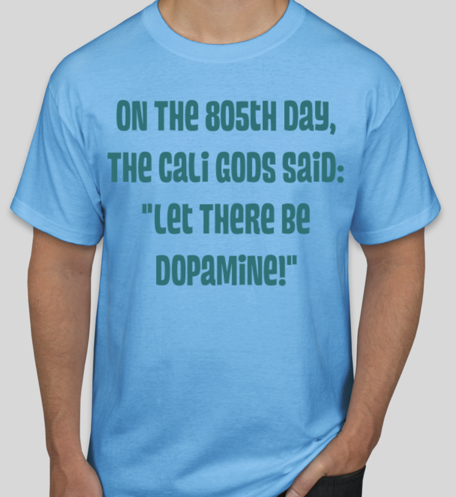
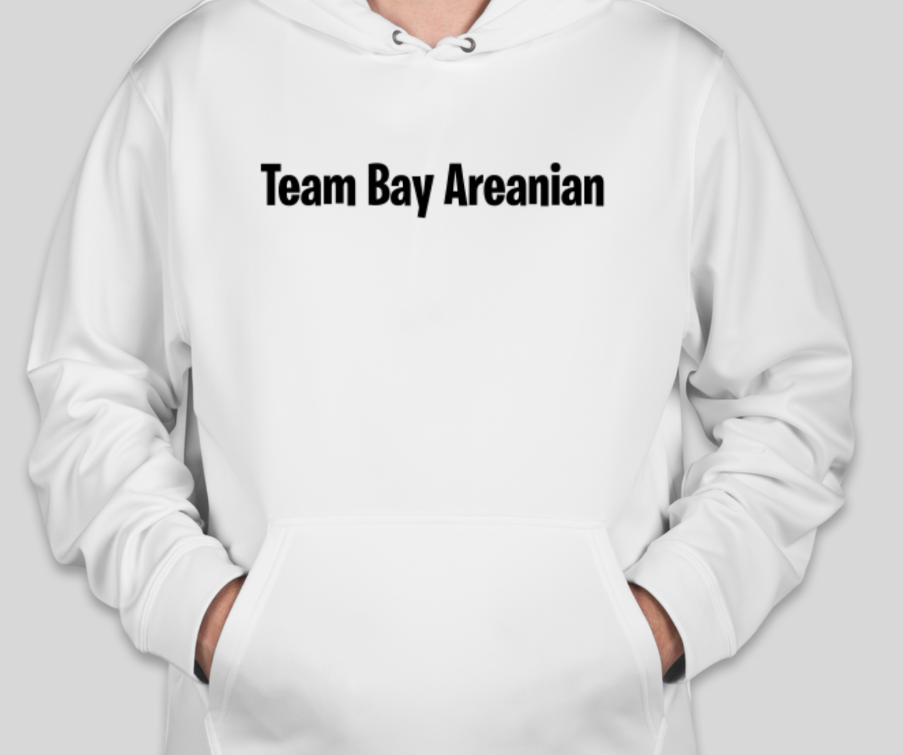

Thanks for stopping by! I am currently a first year at California Polytechnic State University (Cal Poly) in San Luis Obispo (SLO) majoring in applied math with a computer science concentration, and minoring in physics.
Bellevue, Washington:
I moved to Bellevue, Washington when I was five and attended kindergarten through all of high school there. I loved the nice city area downtown and how close it is to one of the most famous cities in 'Merica: Seattle. Growing up near the headquarters of Microsoft, Amazon, and many other big tech companies, I have always been inspired to persue a field in STEM. With any luck, I hope to create a positive impact with my code.
San Luis Obispo, California:
On August 16, 2019, a new chapter of my life started when I moved to the sun bathed city of San Luis Obispo, California. Palm trees were a nice addition to my life and it was nice upgrading from the nerds in Washington to the hot girls in California. I am very thankful for the new friends group and connections I have made here at my time in the golden state.
hobbies/skills:
I do not have too much skills as of right now, but my hobbies include hiking, piano/violin, painting, trading card games, watching sunsets, and eating ice cream (even though I am lactose intolerant LOL).
California Polytechnic State University (Cal Poly), San Luis Obispo
"AU! We are in the GOLDEN state!"
started: August 16, 2019
expected to end: June 2023
Notable courses taken:
Calculus IV, Differential Equations 1, Linear Algebra 1, Methods of Proof in Mathematics, Linear Algebra 2 (in progress), Statistical Methods for Engineers (in progress), general physics 1, general physics 2 (in progress), Modern Physics 1 (in progress), Introduction to Computer Science, Biology of Cancer, Intermediate Microeonomics 1, Intermediate Macroeconomics.
text me at (425) 829 3403 for more questions. US shipping only
 